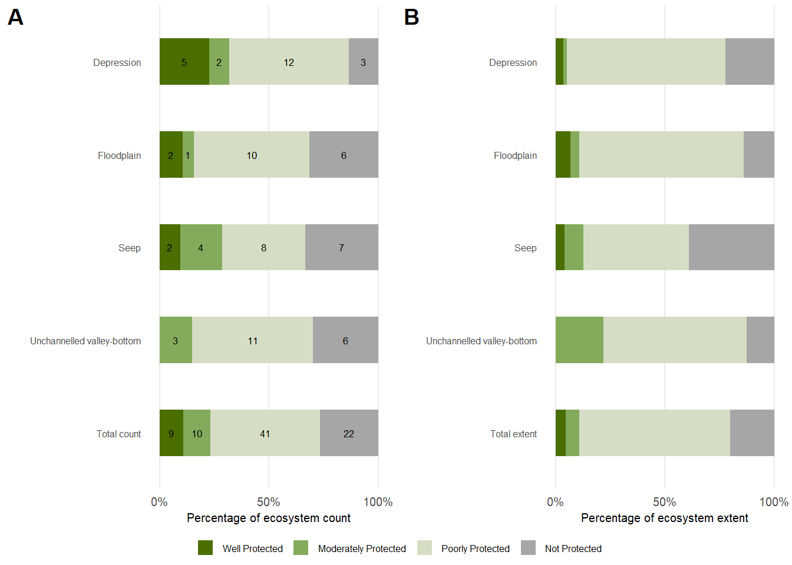

![]()

Inland wetland ecosystems are in poor condition, even in our protected areas. Lack of sufficient field collected information makes it hard to protect them properly, so improving how we monitor their health is crucial. It is concerning that South Africa’s wetlands are degrading faster than we can rehabilitate them.
xx%
of 82 inland wetland types
Natural or Near-natural
of 82 inland wetland types
Natural or Near-natural
35%
of wetland extent
Natural or Near-natural
of wetland extent
Natural or Near-natural
Approximately x% of inland wetland extent and x% of inland wetland ecosystem types have been assessed to be in natural (class A) or near-natural (class B) ecological condition. Approximately x% of inland wetland extent and x% of inland wetland ecosystem types have been assessed to be in a moderately modified (class C) ecological condition and approximately x% of inland wetland extent and x% of inland wetland ecosystem types have been assessed to be in severely modified (class D, E or F) ecological condition.

More text
| Zone | Well Protected | Moderately Protected | Poorly Protected | Not Protected | Total | Metric |
|---|---|---|---|---|---|---|
| Depression | 5.0000 | 2.0000 | 12.000 | 3.0000 | 22.000 | count |
| Floodplain | 2.0000 | 1.0000 | 10.000 | 6.0000 | 19.000 | count |
| Seep | 2.0000 | 4.0000 | 8.000 | 7.0000 | 21.000 | count |
| Unchannelled valley-bottom | 0.0000 | 3.0000 | 11.000 | 6.0000 | 20.000 | count |
| Total count | 9.0000 | 10.0000 | 41.000 | 22.0000 | 82.000 | count |
| Depression | 277.1032 | 115.0607 | 5547.704 | 1713.5289 | 7653.397 | extent |
| Floodplain | 928.4678 | 560.1942 | 10315.630 | 1913.9062 | 13718.198 | extent |
| Seep | 202.9078 | 423.0544 | 2393.020 | 1934.8550 | 4953.837 | extent |
| Unchannelled valley-bottom | 0.0000 | 785.6035 | 2338.487 | 457.2984 | 3581.389 | extent |
| Total extent | 1408.4788 | 1883.9129 | 20594.840 | 6019.5884 | 29906.820 | extent |
Download the data here.
Add text
Refer to DWS NWMF monitoring a subset of wetlands. Refer to dataset of field assessed wetlands contributing to national wetland map condition assessment. Desirable for future collaboration.
Approach
Excellent progress has been made regarding automated condition assessments to support the NBA 2025 inland wetlands threat status; Text
Technical documentation
Code repository: github.com/SANBI-NBA/templates [link to the specific page within github]
Data repository: OPUS, Figshare, KNB or BGIS - [link to the specific page within these websites containing your data]
Publications:
Technical reports:
Recommended citation for this webpage
Collins, N.B., Job, N.M., Awuah, A., names xx. 2025. Inland aquatic condition assessment. National Biodiversity Assessment 2025. South African National Biodiversity Institute. http://nba.sanbi.org.za